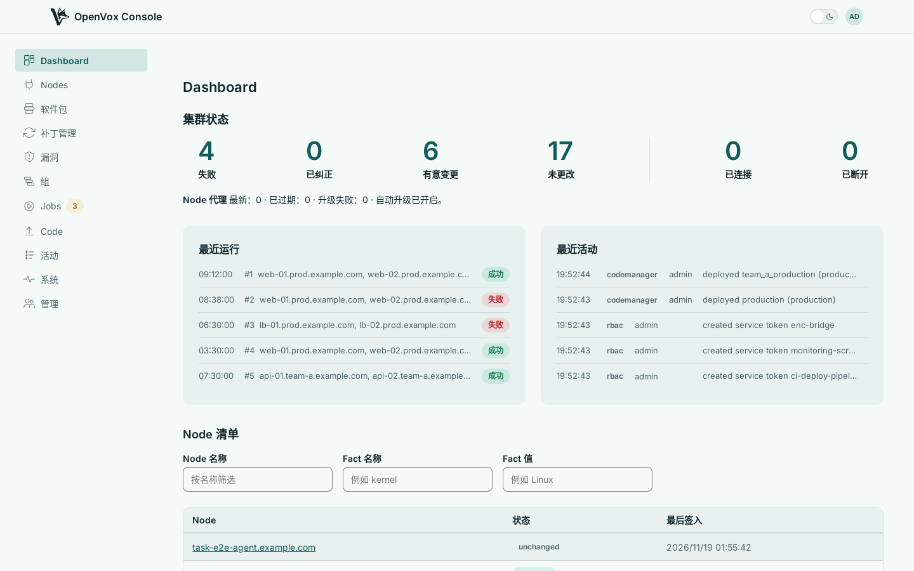

查看每个 Node，决定什么在哪里运行，deploy 你的代码，打补丁并运行 Tasks 和 Plans，并对返回的结果采取行动。面向 OpenVox 的 Puppet Enterprise 控制台——一个 Go 二进制文件，运行在你已有的 openvox-server 和 openvoxdb 之上。


团队为何选择它
下面的每一张图都是控制台本身，截取自一个运行中的实例。

每个 Node 上报的每个软件包，都会与来自 OSV（或者为无法访问外网的站点准备的你自己的镜像）以及 Tenable 的已知漏洞进行匹配，并合并成一个列表。先看看打补丁能修复什么。无人能够评估的 Node 会如实显示，而绝不会显示为没有问题。

通过 OpenID Connect 实现单点登录，每次登录时都会把你的提供方中的组映射为控制台角色。角色就是简单的权限集合，因此每个人看到的恰好是其工作所需的内容。自动化拥有专属的服务令牌，每一次变更都有记录可查。

从一个实例开始。当机群增长时，把同一个镜像作为独立的 web、worker 和 orchestrator 实例运行，通过双向 TLS 组成集群，并把分类服务直接放在你的编译器旁边。所有持久数据都存放在 Postgres 中，因此实例可以在负载均衡器后面随意增减，并且一个页面就能显示所有实例。

在单个 Node、一组选中的 Nodes 或某个组匹配的所有 Nodes 上运行 Puppet，而无需等待下一次计划运行。每个 Node 的结果都会单独返回——状态、输出以及指向其所产生 Report 的链接——离线的 Node 会立即如实说明。

从一个 control 仓库或每个团队一个仓库进行 deploy，可按需触发，也可在每次 push 时触发。然后针对每个仓库，查看分配到其 Environments 的 Node 数量与实际从中运行的 Node 数量的对比——这个差距会告诉你某次 deploy 尚未落地，或者有 Nodes 正在运行没有任何东西分配给它们的代码。
以及控制台的其余部分
构建于你已经在运行的技术栈之上
openvox-server 仍然编译 catalog 并运行 CA；openvoxdb 仍然存储 Facts 和 Reports。你的代理继续与现在完全相同的对象通信——控制台提供标准 ENC 约定，因此 Node 端无需做任何改动。
docker compose up 会一并启动 openvoxserver、openvoxdb、Postgres 和控制台，你可以把一个测试代理指向它，在做出任何承诺之前先看到自己的 Nodes 出现。
OpenVox Console 以容器镜像形式发布，每次 push 都会构建 amd64 和 arm64 版本，同时也提供单个二进制文件。安装指南将带你从一台空主机走到一套可用的部署——openvoxserver、openvoxdb、Postgres 和控制台——可以用容器，也可以用软件包。